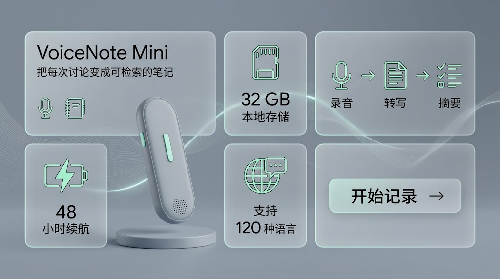

- 可执行提示词
- 案例来源与输入要求
- Gemini 实测与 Codex 演示分层
- 统一判断标准
01
选路线从文字、参考图、视觉控制或迭代中选择任务。
02
复制执行每张卡片都有完整提示词与明确输入要求。
03
按标准判断比较命中项与失败项，不把案例效果当作承诺。
Runnable Prompts / 可执行提示词
四条路线，十二个最小验证任务
提示词由本研究根据案例结构重新编写，不是对上游原文的大段复制。每项都说明输入、观察重点和通过条件。
01图片来源Gemini 实测、Codex 演示或上游参考。
02当前证据命中、待核验、方向演示或尚未执行。
Real Evidence / 真实结果
两项真实任务：首次生成可用，局部编辑仍有边界
E01 保留首次生成与单变量编辑的成败对照；E02 记录高密度产品信息图的首次命中。两者都不能代表所有模型版本或稳定复现率。
RUN A · 首次生成
命中基础生成
中文、版式和强调色一次完成
- 主文案、标点与署名完全准确
- 4:5 竖版、象牙白和芥末黄命中
- 没有额外英文、Logo 或装饰性乱码
RUN B · 单变量编辑
未命中局部修改
要求改为居中，结果仍然左对齐
- 文字和整体视觉被稳定保留
- 唯一要求修改的对齐方式没有生效
- 说明“保持一致”与“精确局部编辑”不是同一能力

E02 · 首次生成命中首次生成 · 尚未复测
六个信息模块与全部文字一次完成
- 标题、副标题、48 小时、32 GB、120 种语言和 CTA 均准确
- “录音 → 转写 → 摘要”顺序正确，六个 Bento 模块完整
- 冷灰、薄荷绿与液态玻璃风格命中，没有新增产品数据
RESEARCH TAKEAWAY
可以确认：这两次首次生成都完成了准确中文、清晰版式与明确视觉约束，E02 还承载了较高的信息密度。不能确认：网页端能稳定执行单变量局部编辑，或同一提示词能够稳定复现。优秀案例是探索入口，不是模型效果承诺。
Codex ImageGen / 跨模型演示
九张生成结果，把提示词方向变成可见能力
这些图片由 Codex ImageGen 在本研究中生成，用于展示提示词结构的迁移价值；它们不是 Nano Banana Pro 或 Gemini 的效果证明。
证据边界
Gemini 实测回答“Gemini Web 这次是否做到”；Codex 演示回答“这类结构可以驱动什么视觉方向”。两种证据不混用；E10 仅是对照板示意，不是两次独立运行。
Scorecard / 统一评分
不用“感觉不错”，用同一把尺子比较
每个维度 1–5 分。只有总分达到 21/25、关键维度不低于 3 且至少复测两次，才适合沉淀为稳定模板。
维度观察问题权重
指令遵循主体、动作、文字和布局是否按要求出现？25%
一致性人物、产品或场景在变体中是否稳定？25%
视觉控制构图、镜头、光线、材质和色板是否命中？20%
文字/事实文字是否准确？事实、地图和数据是否可核验？15%
实际可用性是否可以进入当前内容、Web 或视觉资产流程？15%
Reusable Skeletons / 复用骨架
五个跨案例骨架，用于真实需求出现以后
上面的 12 条是固定测试任务；下面的 5 条是可替换方括号变量的通用结构。两者用途不同。
Boundary / 研究边界
这页聚焦可执行研究，能力结论仍需按任务判断
- 所有提示词必然复现
- 事实内容无需核验
- 人物与品牌自动获得授权
- 网页端具备稳定局部编辑